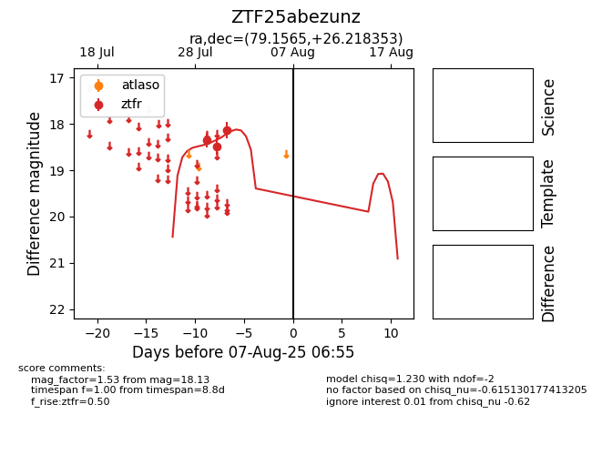

Target ZTF25abezunz at 2025-08-09 06:47, see:
FINK: fink-portal.org/ZTF25abezunz
Lasair: lasair-ztf.lsst.ac.uk/objects/ZTF25abezunz
ALeRCE: alerce.online/object/ZTF25abezunz
alt names
ZTF25abezunz (ztf,fink)
coordinates:
equatorial (ra, dec) = (79.1565,+26.21835)
galactic (l, b) = (178.7612,-6.86392)
photometry
last ztfr=18.33
4 ztfr detections
